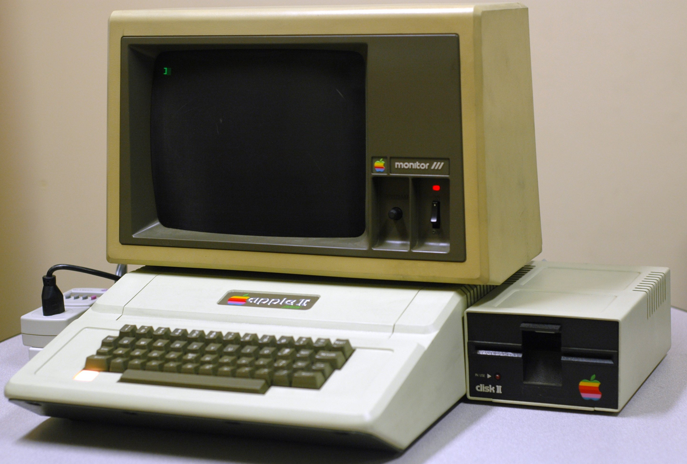
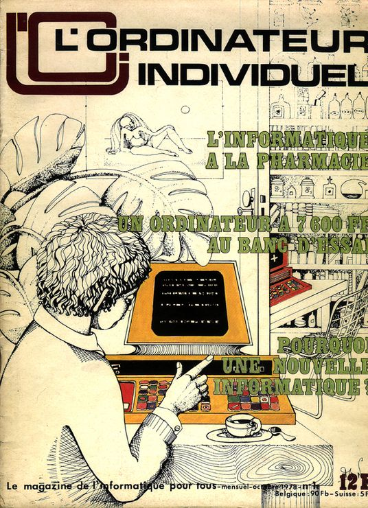
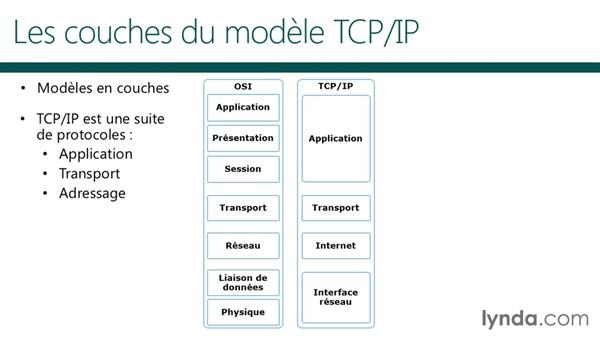
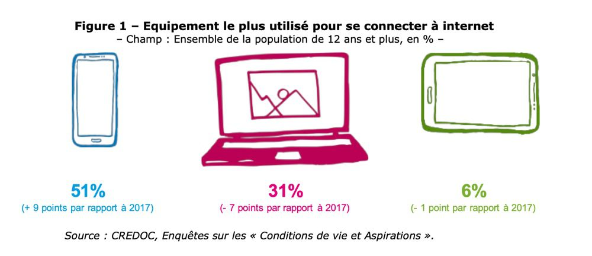
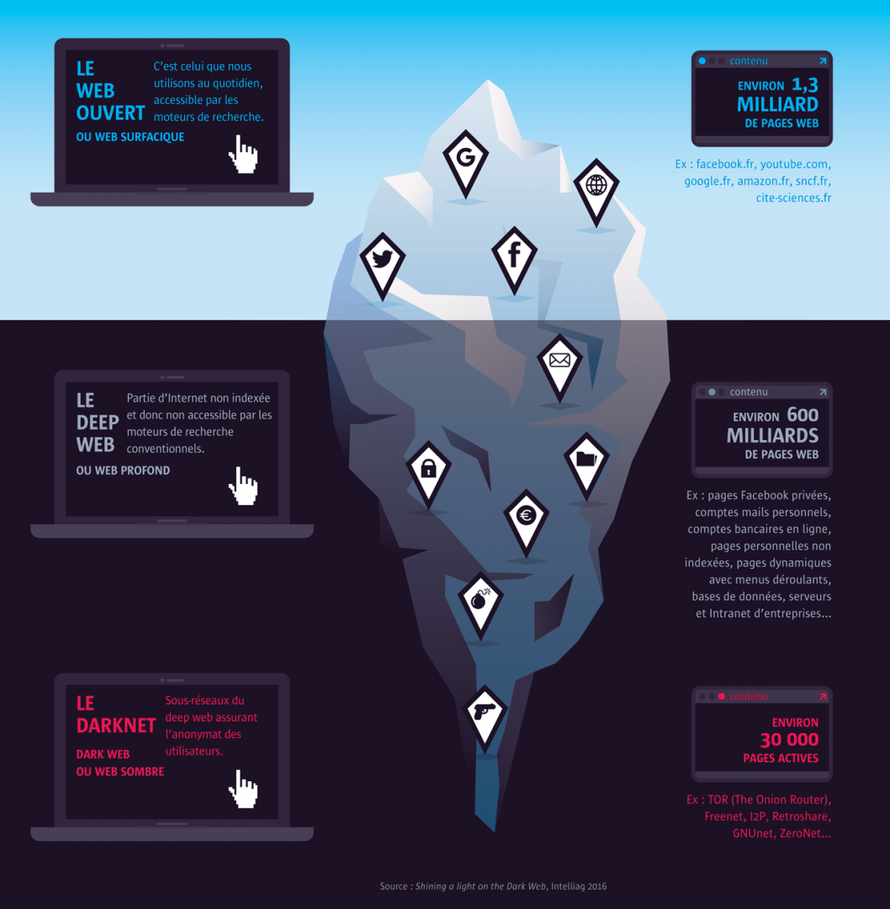
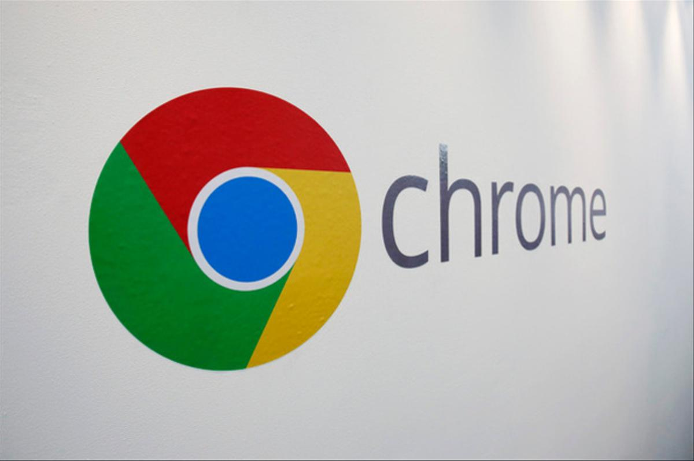

-
L'Apple II est l'un des premiers ordinateurs personnels au monde fabriqué à grande échelle.
× Source : Ac-Versailles
Evolution du marché
Conçu par Steve Wozniak, commercialisé le 10 juin 1977 par Apple, il commence sa carrière auprès des particuliers passionnés, mais la sortie du premier tableur, VisiCalc en 1979 permit son entrée dans le monde professionnel et une augmentation très importante de ses ventes, faisant la richesse subite de la société Apple à cette époque.
-
Parution des revues L'Ordinateur Individuel et Micro-Systèmes.
× Source : --
Evolution du marché
La revue L'Ordinateur Individuel est une revue plutôt orientée utilisation et utilisateurs. La revue Micro-Systèmes elle est plutôt orientée électronique.
-
Le Commodore 64 est un ordinateur personnel conçu par Commodore Business Machines Inc.
×
Source : wikipedia
Evolution du marché
Il fut la première machine vendue à plusieurs millions d'exemplaires (de 17 à 25 millions selon les estimations), et il reste le modèle d'ordinateur personnel le plus vendu à ce jour, selon le Livre Guinness des records.
-
Début d'internet TCP/IC grand public
× Source :
Evolution du marché
Le 12 mars 1989, Tim Berners-Lee, scientifique au CERN, l’Organisation européenne pour la recherche nucléaire, présente pour la première fois l’idée du Web. C’est ce système, permettant de publier et organiser l’information à base de documents et de liens, qui démocratise l’usage du réseau Internet, conçu plus tôt. En France, le grand public commence à découvrir Internet en 1994, grâce à des petits fournisseurs d’accès indépendants comme Francenet, Calvanet ou Worldnet, qui proposent des abonnements aux particuliers à des prix raisonnables.
-
Internet : Mosaic, le premier navigateur web
×
Source : Znet
Evolution du marché
NCSA Mosaic est un navigateur web développé à partir de fin 1992 au centre de recherches américain NCSA (National Center for Supercomputing Applications), d'abord pour les plateformes X Window (X Mosaic), puis Macintosh (Mac Mosaic) et enfin Windows. C'est le navigateur qui a rendu le World Wide Web populaire
-
Netscape Navigator était un navigateur web qui a dominé le marché au milieu des années 1990.
×
Source : Hitek
Evolution du marché
Celui-ci a régressé face à la concurrence d'Internet Explorer. Il était édité par la société Netscape Communications, faisant maintenant partie du groupe Time Warner (anciennement connu sous le nom d'AOL Time Warner).
-
Création d'Internet Explorer
×
Source : Siecle Digital
Evolution du marché
Création d'Internet Explorer, parfois abrégé IE, MIE ou MSIE, est le navigateur web développé par la société américaine Microsoft et installé par défaut avec Windows. Entre la fin des années 1990, quand il détrône Netscape Navigator, jusque vers 2012, c'est le navigateur web le plus utilisé au monde. En 2014, il est deuxième en Europe et troisième en France2. Ses principaux concurrents sont Mozilla Firefox (depuis 2004), Google Chrome (depuis 2008) et Safari.
Les versions antérieures à la version 7 sont nommées « Microsoft Internet Explorer », tandis qu'à partir de la version 7, le logiciel est intitulé « Windows Internet Explorer ». À partir de la version 10, uniquement « Internet Explorer ».
-
Apple : Retour de Steve Jobs chez Apple et lancement de l'iMac
×
Source : Aventure Apple
Evolution du marché
Apple, alors au bord de la faillite, rachète NeXT. L'opération permet à Steve Jobs de revenir à la tête de la firme qu'il a cofondée et fournit à Apple le code source de NeXTSTEP à partir duquel est développé le système d'exploitation Mac OS X. Il supervise durant les quatorze années suivantes la création, le lancement et le développement de l'iMac (1998), de l'iPod, d'iTunes et de la chaîne de magasins Apple Store (2001), de l'iTunes Store (2003), de l'iPhone (2007) et de l'iPad(2010)
L’iMac a sans aucun doute marqué le retour d’Apple sur le devant de la scène. La petite machine est à la fois puissante, compacte et incroyablement design. Lors de sa présentation à la presse, le 6 mai 1998, le but d’Apple était clair : refaire un coup aussi réussi que lors du lancement du premier Macintosh. Une nouvelle fois, Apple ose présenter une machine qui rompt complètement avec les standards de l’informatique.
-
Première version de Tor, Génèse d'un projet qui plus tard développera une immense économie parallèle.
×
Source : Wikipédia
Evolution du marché
Dans les années 2010 Tor permettra de déveloper le darknet et le bitcoin. Tor est utilisé pour se protéger contre une certaine forme de surveillance sur Internet, connue sous le nom d'analyse de trafic. Cette analyse est utilisée pour déterminer qui communique avec qui sur un réseau public. Connaître la source et la destination de votre trafic peut permettre à des personnes de traquer votre comportement et vos intérêts.
-
Nombre d'utilisateurs Linux
×Source : Zdnet
Evolution du marché
Le nombre d'utilisateurs de Linux en 2003 est estimé à 18 millions
-
Le format de bureautique OpenDocument devient une norme ISO.
×
Source : Nextinpact
Evolution du marché
Apparition du format de bureautique OpenDocument. OpenDocument est un format de fichier ouvert conçu pour les applications bureautiques: traitements de texte, tableurs, présentations... C’est le format utilisé notamment par la suite Openoffice.org mais son caractère ouvert le rend indépendant du logiciel utilisé. Cette caractéristique lui confère, nous allons le voir, un intérêt majeur en matière d’interopérabilité.
-
The Document Foundation publie la première version de LibreOffice : la 3.3.0. L'année se termine avec la 3.4.4.
×
Source : Wikipédia
Evolution du marché
Nouveau concurrents dans les logiciels de wording, LibreOffice est une suite bureautique libre et gratuite, dérivée du projet OpenOffice.org, LibreOffice est notamment soutenu par la Fondation pour le logiciel libre et rassemble autour du projet une grande partie de l'ancienne « communauté d'OpenOffice.org ». LibreOffice est intégré au socle interministériel de logiciels libres de l'État français. L'interface utilisateur est disponible en 114 langues.
-
Le nombre d'utilisateurs connectés à internet depuis un smartphone dépasse celui des utilisateurs connectés via un PC.
× Source : Journal du net
Evolution du marché
Changement de stratégie pour beaucoup d'entreprises qui comprennent que plus plus en transactions s'effecturont par smartphone. développement du mobile-first et ux dirigé smartphone.
-
Émergence du marché des objets connectés.
×
Source : Digital Corner
Evolution du marché
Le Web des objets désigne l'intégration de tout appareil interrogeable ou contrôlable à distance, dans le monde du World Wide Web. Dans le Web des objets, les technologies populaires du Web (HTML, JavaScript, Ajax…) peuvent être utilisées pour développer des applications qui font appel à des objets intelligents. Les utilisateurs peuvent se servir des mécanismes Web bien connus (la navigation, la recherche, l'étiquetage, la mise en cache, les liaisons) pour interagir avec eux.
-
Développement à vitesse grand V du Darknet.
× Source : Les Echos
Evolution du marché
Un darknet est un réseau superposé (ou réseau overlay) qui utilise des protocoles spécifiques intégrant des fonctions d'anonymat. Certains darknets se limitent à l'échange de fichiers, d'autres permettent la construction d'un écosystème anonyme complet (web, blog, mail, irc) comme Freenet. Le Darknet est surtout connu pour ses applications illégales. On y trouve en effet les célèbres supermarchés de la drogue comme le défunt Silk road, des vendeurs d'armes ou encore des offres de services de tueurs à gages ou de pirates informatiques. Son utilisation supposée par certains groupes terroristes en a fait un bouc émissaire des services de renseignements. Ces usages restent toutefois minoritaires au sein du darknet.
-
En mars 2016 le navigateur Google Chrome dépasse Internet Explorer en parts de marché.
× Source : L'expansion
Evolution du marché
En mars 2016 Chrome, le navigateur de Google, s’est désormais imposé comme le numéro un incontesté sur le marché mondial, détrônant définitivement sur les ordinateurs Internet Explorer et Edge, les logiciels concurrents de Microsoft, selon des estimations publiées ce lundi.
La société spécialisée dans ce type de statistiques Net Application, relayée par ZDNet, a calculé que Chrome avait dépassé pour la première fois Internet Explorer sur les ordinateurs en avril, d’une courte tête : 41,66% de part de marché contre 41,35% pour le logiciel de Microsoft. En mars, Chrome pointait encore seulement à 39,09% contre 43,40% pour Internet Explorer.
-
Développement de l'internet des objets.
×
Source : Gladiacteur
Evolution du marché
Le site Net Market Share réalise des analyses de part de marché, que ce soit les navigateurs utilisés, mais aussi les systèmes d’exploitation et les moteurs de recherche. Au mois d’avril 2016, Google Chrome était utilisé par 41,71 % des internautes contre 41,33 % pour Internet Explorer. La différence est minime, mais c’est bel et bien la première fois que le navigateur de Google passe devant celui de Microsoft sur les chiffres de Net Market Share.
-
Augmentation des achats et du commerce en ligne dû à la pandémie du Covid-19
×Source : lsa-conso.fr
Evolution du marché
La Covid-19 a fait explosé le e-commerce durant cette année 2020. Le commerce en ligne- total biens hors services a augmenté de 13% par rapport au premier semestre de 2019. Notamment durant le confinement, de mars à mai 2020les dépenses en ligne gagnent 37% de valeur par rapport à la même période en 2019. Pour finir les commandes en ligne sont en hausse de 20% durant ce premier confinement